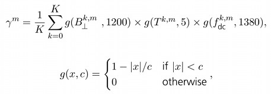
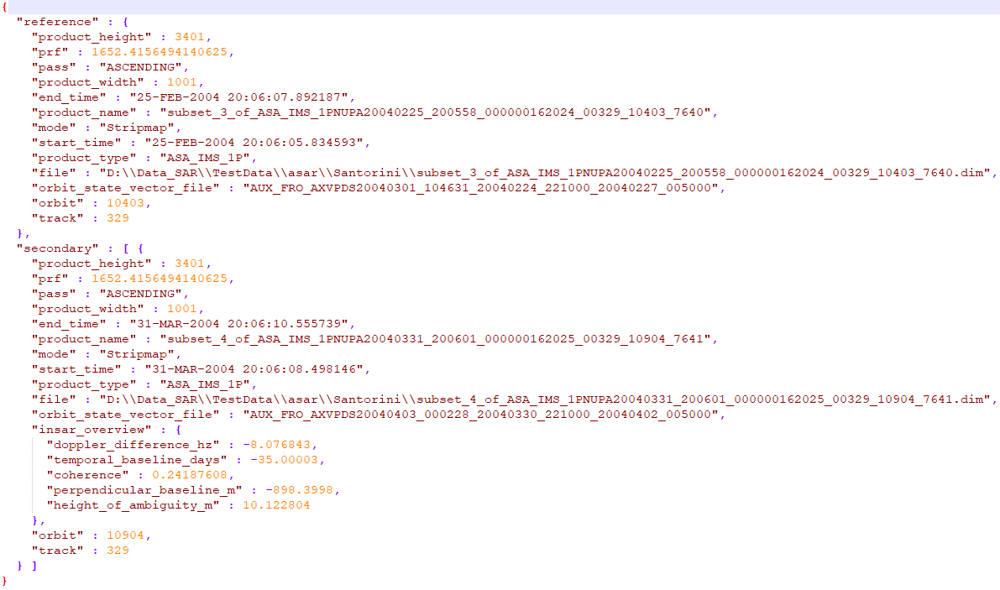

| InSAR Stack Overview | |
This function gives general information about the interferometric stack. The information about the acquisition date, sensor, mode, as well as information about perpendicular and temporal baselines are being listed. Also, an estimate for the modeled (expected) coherence is being computed, and used in selection of the optimal reference image for the InSAR stack.
The reference image is selected such that the dispersion of the perpendicular baseline is as low as possible. The reference image is selected maximizing the (expected) stack coherence of the interferometric stack. The "optimal" reference implies improved visual interpretation of the interferograms and aids quality assessment.
The stack coherence for a stack with reference image m is defined as:

where B symbol represents the perpendicular baseline between images m and k at the center of the image, the symbol T the temporal baseline, and fDC the Doppler baseline (the mean Doppler centroid frequency difference). The divisor c, in the second equation, can be regarded as a critical baseline for which the total de-correlation is expected for targets with the distributed scattering mechanism.
The equation image shows the C-band constants with T in years. In the code T is in days, g is 0.01 (not 0) beyond c, and the three constants depend on the band, which is picked from the Reference wavelength:
| Band (wavelength) | B⊥ constant (m) | T constant (days) | fDC constant (Hz) |
|---|---|---|---|
| X (2.5 to 4 cm) | 600 | 730 | 2200 |
| C (4 to 8 cm; also any wavelength outside the table) | 1200 | 1095 | 1380 |
| S (8 to 15 cm) | 2500 | 1825 | 1500 |
| L (15 to 30 cm) | 6000 | 2920 | 1500 |
| P (30 cm to 1 m) | 12000 | 3650 | 1200 |
The baselines are computed at the scene centre at zero height; T is Reference minus Secondary in days (negative for later dates). Open the tool from Radar > Interferometric > InSAR Stack Overview; it needs at least two SLC products.
It is possible to run the InSAR Overview operator via the command-line using GPT and produce a JSON file.
Create a graph with a product-set reader and the InSAR Overview operator and specify the target location for the JSON file.
The JSON file will contain the following information:

The coherence modeled by this functionality, and other information provided by this functionality, is purely based on the metadata information of input products. The complex data (nor any other information from the source product bands) in modeling of the coherence and other parameters is not used at all. The interpretation of the modeled coherence and acceptance of recommendations for the choice of the reference image therefore has to be performed with great care. The GPT operator refuses non-SLC products; use SLC products in the dialog as well.
The model used in computation of coherence will severely underestimate the coherence in ERS-2 / Envisat Cross Interferometry applications. For this, and similar application, more robust model that integrates the principles of the wave-number shift shall be used.